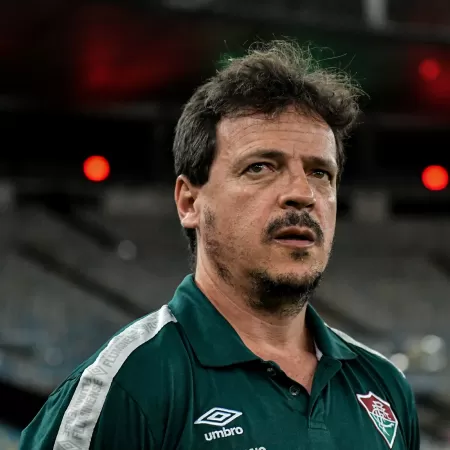
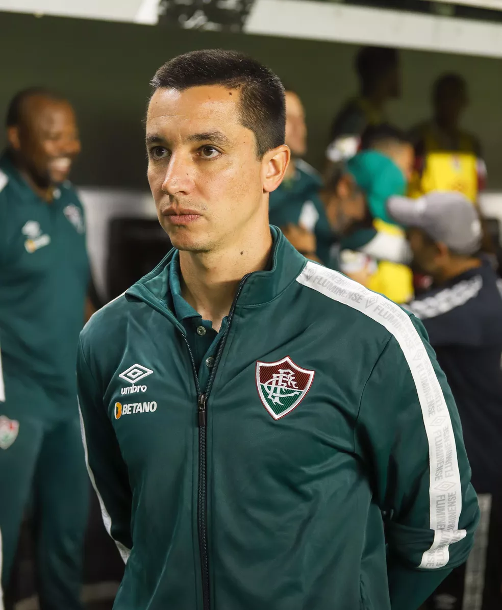
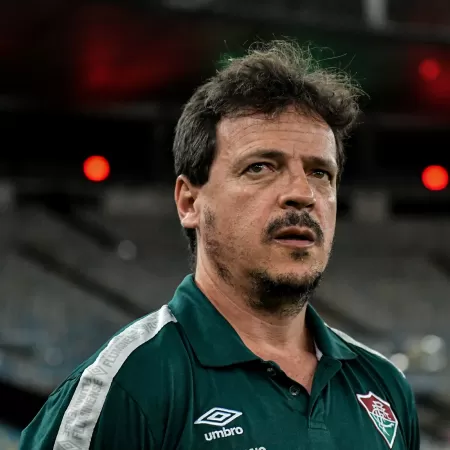
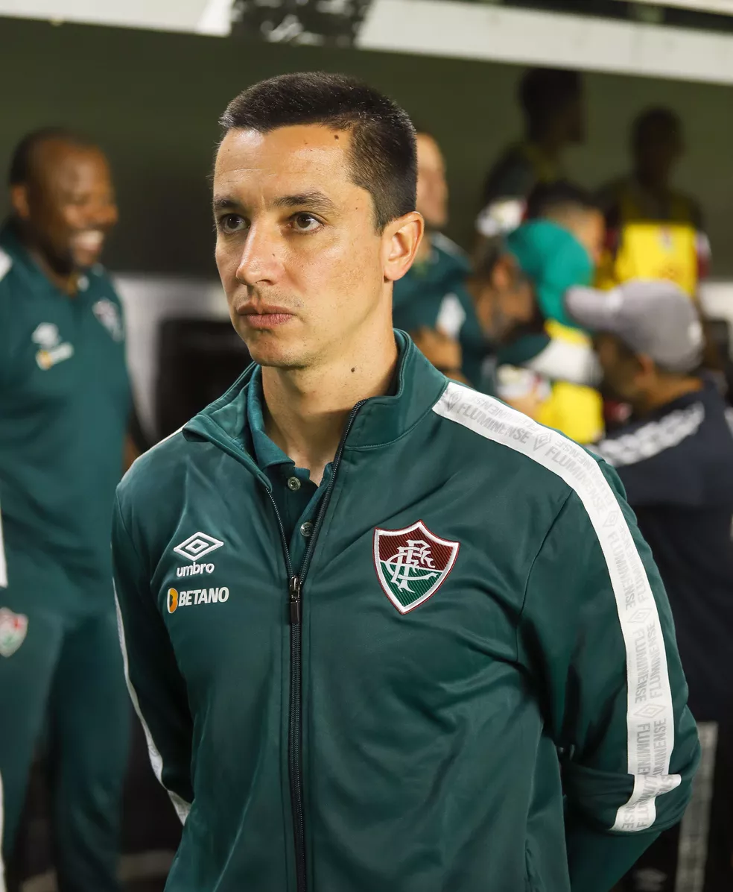

Treinador que chama atenção por onde passa, por sua visão de futebol, Diniz vive sua segunda passagem pelo
Fluminense
Fernando Diniz é um dos treinadores que mais divide opiniões no futebol brasileiro. Existem os entusiastas
de seu trabalho, focado em posse de bola e saídas sustentadas desde o campo de defesa, mas existem também
os críticos ferrenhos que acreditam que suas equipes passam por mais sustos do que necessário.
Agora em 2022, o treinador voltou ao Fluminense, onde já tinha história como técnico em 2019 (além de uma
passagem como jogador, décadas atrás). E os resultados do Tricolor de Diniz nesta atual temporada chamam
atenção positivamente.
O Fluminense caiu nas semifinais da Copa do Brasil diante do Corinthians, mas segue com boa campanha
dentro do Brasileirão e está classificado para a Libertadores de 2023.
Nome no país de origem: Fernando Diniz Silva
Data de nascimento: 27/03/1974
Local de nascimento: Patos de Minas
Idade: 49 anos
Nacionalidade: Brasil
Média de tempo como treinador: 0,66 Anos
Formação preferida: 4-2-3-1

O auxiliar Eduardo Barros se tornou o braço-direito de Fernando Diniz no Fluminense e atua como um suporte do técnico que conduziu o time carioca ao G-4 do Campeonato Brasileiro. Em que pese o bom trabalho nas Laranjeiras, o assistente tem um histórico positivo na função de treinador.
Ele ficou por pouco tempo à frente do Juventude — foi apenas interino da equipe por oito jogos —, mas é dono do melhor aproveitamento do time nos últimos dez anos. Ele soma 66% de rendimento, com quatro vitórias e quatro empates.
"O que me chamou a atenção é que sou o treinador com maior aproveitamento no Juventude nos últimos dez anos. São poucos jogos, apenas oito, mas tem relevância. São jogos de Estadual, Brasileiro e Copa do Brasil. Esses oito jogos se somam aos trinta que tenho pelo Athletico-PR. Isso, eu achei muito legal", disse Eduardo Barros, explicando como iniciou a passagem pelo futebol gaúcho.
Nome completo Eduardo Maciel de Barros
Data de nascimento: 08/03/1985
Local de nasc. Campinas, Brasil
Idade: 38 anos
Nacionalidade: Brasil
Média de tempo como treinador: 0,64 Anos
Formação preferida: 4-2-3-1


Comissão Técnica
Treinador que chama atenção por onde passa, por sua visão de futebol, Diniz vive sua segunda passagem pelo Fluminense Fernando Diniz é um dos treinadores que mais divide opiniões no futebol brasileiro. Existem os entusiastas de seu trabalho, focado em posse de bola e saídas sustentadas desde o campo de defesa, mas existem também os críticos ferrenhos que acreditam que suas equipes passam por mais sustos do que necessário. Agora em 2022, o treinador voltou ao Fluminense, onde já tinha história como técnico em 2019 (além de uma passagem como jogador, décadas atrás). E os resultados do Tricolor de Diniz nesta atual temporada chamam atenção positivamente. O Fluminense caiu nas semifinais da Copa do Brasil diante do Corinthians, mas segue com boa campanha dentro do Brasileirão e está classificado para a Libertadores de 2023.
Nome no país de origem: Fernando Diniz Silva
Data de nascimento: 27/03/1974
Local de nascimento: Patos de Minas
Idade: 49 anos
Nacionalidade: Brasil
Média de tempo como treinador: 0,66 Anos
Formação preferida: 4-2-3-1
O auxiliar Eduardo Barros se tornou o braço-direito de Fernando Diniz no Fluminense e atua como um suporte do técnico que conduziu o time carioca ao G-4 do Campeonato Brasileiro. Em que pese o bom trabalho nas Laranjeiras, o assistente tem um histórico positivo na função de treinador. Ele ficou por pouco tempo à frente do Juventude — foi apenas interino da equipe por oito jogos —, mas é dono do melhor aproveitamento do time nos últimos dez anos. Ele soma 66% de rendimento, com quatro vitórias e quatro empates. "O que me chamou a atenção é que sou o treinador com maior aproveitamento no Juventude nos últimos dez anos. São poucos jogos, apenas oito, mas tem relevância. São jogos de Estadual, Brasileiro e Copa do Brasil. Esses oito jogos se somam aos trinta que tenho pelo Athletico-PR. Isso, eu achei muito legal", disse Eduardo Barros, explicando como iniciou a passagem pelo futebol gaúcho.
Nome completo Eduardo Maciel de Barros
Data de nascimento: 08/03/1985
Local de nasc. Campinas, Brasil
Idade: 38 anos
Nacionalidade: Brasil
Média de tempo como treinador: 0,64 Anos
Formação preferida: 4-2-3-1